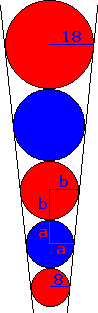
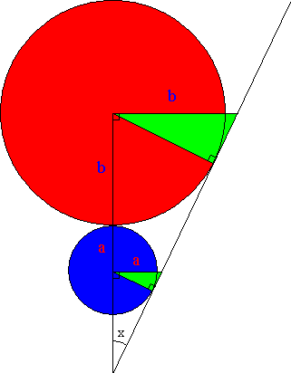

Solution to puzzle 37: Five marbles
Consider two adjacent marbles, of radii a < b. We will show that b/a is a constant, whose value is dependent only upon the slope of the funnel wall.
The marbles are in contact with each other, and therefore the vertical distance between their centers is b + a.
The marbles are also in contact with the funnel wall. Since the slope of the funnel wall (in cross section) is a constant, the two green triangles are similar. Hence the horizontal distance from the center of the marbles to the funnel wall is bc and ac, where c is a constant, equal to sec x.
|  |  |
Let the slope of the funnel wall be m.
Then m = (b + a) / (b - a)c.
Rearranging, b/a = (mc + 1)/(mc - 1).
Hence the ratio of the radii of adjacent marbles is a constant, dependent upon the slope of the funnel wall; call it k.
In this case, we have 18 = 8k4.
So k2 = 3/2.
Therefore the radius of the middle marble is 8 · (3/2) = 12mm.
Note that 12 is the geometric mean of 8 and 18. For any odd number of marbles in such a configuration, the radius of the middle marble is the geometric mean of the radii of the smallest and largest marbles.
Source: Mark Ganson